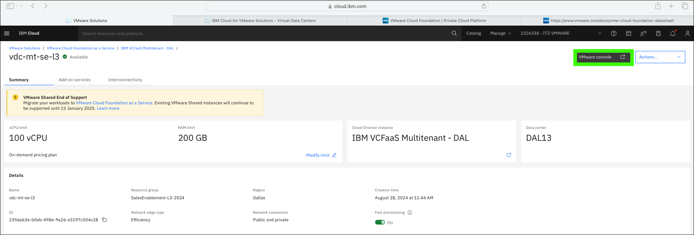
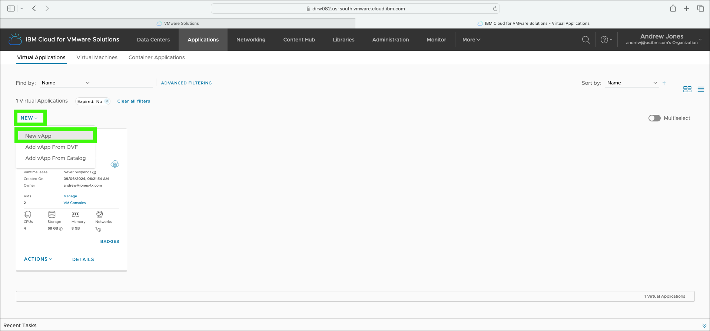
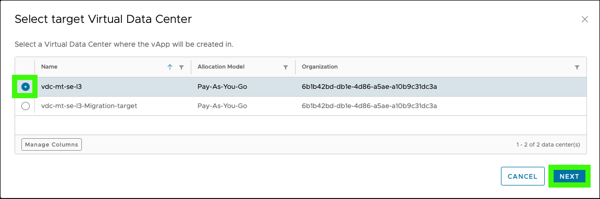

Operating
Having completed the earlier modules on provisioning a VMware Cloud Foundation (VCF) as a Service multitenant instance, it is now time to operate and use the VCF environment.
VCF provides a robust private cloud environment running on public cloud infrastructure (like IBM Cloud). VCF includes the full VMware stack of products including vSphere for compute, vSAN for storage, NSX for networking, and Aria for management.
These VMware products are large, complex, and full of many, many features. The intent of this module is not to demonstrate all the capabilities of VCF, rather to provide basic education and demonstration capabilities that illustrate:
-
How the "on IBM Cloud" capabilities of the VCF as a Service multitenant are exposed through the VMware web console (VMware vCloud Director [VCD]).
-
How to provision basic resources including data center groups, networks, and virtual machines using VCD.
-
Illustrate how a VCF as a Service multitenant instance on IBM Cloud is just like VCF in a client's enterprise data center.
About the IBM Technology Zone (ITZ) environment
The steps that follow are specific to the ITZ environment reserved as part of the IBM Cloud for VMware Solutions for Technical Sales Level 3 learning plan. If you don't already have an active reservation, refer to Reserve the IBM Technology Zone environment.
** The images shown in this document will look different than the live environment you will be using.** The resources described here will have already been created and other users may have created additional resources.
All of the steps described in this module CAN be completed by every user of the shared ITZ environment using VMware vCloud Director (VCD). However, in some instances, creating new resources (like networks) will be discouraged.
If you opt to create a resource, please delete the resource before your ITZ reservation expires! Doing so will reduce ongoing maintenance costs of the environment and help preserve the usability of the shared environment.
-
Click the link below to open a browser to the IBM Cloud portal.
-
If not already in the 2326338 - ITZ-VMWARE, switch to the 2326338 - ITZ-VMWARE IBM Cloud account.
Depending on the size of the browser window, the switch account menu will vary as seen in these two animated images.

-
Click vdc-mt-se-l3 in the virtual data centers (VDC) table.

-
Click VMware console.

-
Click SIGN IN WITH OIDC.
Single sign-on has been enabled as part of the VCF as a Service integration with VCD. The integration is between the VMware components and IBM Cloud Identity and Access Management (IAM). OpenID Connect (OIDC) is an identity layer built on top of the OAuth 2.0 framework. It allows third-party applications to verify the identity of the end-user and to obtain basic user profile information. Learn more about OIDC here. Learn more about the IBM Cloud IAM and VMware sign in capabilities here.

You may be asked to reauthenticate to IBM Cloud
After clicking the SIGN IN WITH OIDC button, you may be asked to re-authenticate to IBM Cloud. IBM employees and business partners that have multi-factor authentication (MFA) enabled in their IBM Cloud account may also have additional authentication steps to perform. These steps are not detailed here.
-
Explore the information displayed on the Data Centers summary page and then click the vdc-mt-se-l3 tile.
The screen capture shown below was taken before any resources were provisioned in the VCF as a Service instance. Your view will be different and reflect any currently provisioned resources.

Networking
The network for a VCF as a Service environment is a critical element that clients must plan carefully. Some information on network planning is provided in the IBM Cloud documentation here. VMware also has good documentation that is accessible through the vCloud Director web console or here. The network implementation in this demonstration environment is minimal and should not be considered as a best of practice.
The next steps show how to create a data center group, expand the scope of an edge gateway, and create a network that can be used by virtual machines (VMs). Data center groups allow administrators to group VDCs together to share network resources. In this ITZ environment, a group of only one VDC will be created. However, in most client environments, there will be multiple VDCs, and connectivity will need to be established between them. To allow network connectivity to VMs, a data center group and network needs to be created in the virtual data center.
In the ITZ enviroment, you can, but you don't need to
While you can create a new data center group and network in the instance, there is no need to as they have already been created in the ITZ environment. If you do create new ones, please delete yours, and only yours before your ITZ reservation expires.
-
Click the Networking tab.
-
Click the Data Center Groups tab.
-
Click New.
-
Select the vdc-mt-se-l3 VDC and click NEXT.

-
Enter a unique name and description and click NEXT.
-
Click NEXT on the Participating VDCs screen.

-
Click CANCEL.
A VDC group has already been created in the shared environment, so no need to create one. However, if you really want to, you can click Finish, but please be sure to remove any resources you create.

It takes just a few seconds for the VDC group to be created.
-
Click the Edge Gateways tab.
Notice the Recent Tasks table at the bottom of the page and the status of the recent actions.

-
Click vdc-mt-se-l3 in the table. Note the name in the table will have a unique ID appended to it.

-
Click INCREASE SCOPE.
Scope has already been increased
When the network was initially created, the scope was increased. The DECREASE SCOPE option will be visible now.
The scope needs to be increased to include the VDC group created earlier.

-
Click DISCARD.
This action has already been performed on the existing edge gateway. If you were to create a new one, you would select the group in the table and click OK.

-
Click the Networks tab.
-
Click NEW.

-
Select Data Center Group and select the vdc-group-mt-se-l3 group then click NEXT.

-
Review the Network Type page and then click NEXT.
A Routed network is chosen to allow the virtual machines to communicate with each other within the VDCs, and potentially outside to other resources like the Internet or other IBM Cloud services.
-
Enter a Name and Description and then specify a new CIDR and click NEXT.
In this demonstration environment, a network is created using the non-routable private network CIDR of 192.168.1.1/24.
The Dual-Stack Mode enables support for both IPv4 and IPv6 addressing. The Distributed Routing option provides fast and efficient East-West routing. This can be disabled to connect to the service router and force all VM traffic through the service router.

-
Review the Static IP Pools page and then click NEXT.
-
Enter 161.26.0.10 and 161.26.0.11 for the Primary DNS and Secondary DNS and click NEXT.
The 161.26.0.10 and 161.26.0.11 addresses are the IBM Cloud public DNS addresses.
-
Click CANCEL and then YES in the Cancel Wizard dialog.
This action has already been performed on the existing network. If you were to create a new one, you would click FINISH.

Once the network is created and the status turns to Normal, the next step is to activate dynamic host configuration protocol (DHCP) so VMs are automatically assigned network addresses when they are provisioned.
-
Click vdc-mt-se-l3-defaultNetwork in the table.
-
Click DHCP in left menu.
Please read about the next few steps
The next few steps cannot be performed with the default network already created in the ITZ environment. You can perform them if you create a new network. The steps are provided for education purposes. The next step you can actually perform is step 33.
-
Click ACTIVATE.
Note, this option will not be available for the network already created, rather you will see DEACTIVATE. DO NOT deactivate DHCP for the default network!
-
Review the General Settings and click NEXT.
-
Click ADD and then enter a valid IP Range for the network's CIDR and then click NEXT.
-
Enter 161.26.0.10 and 161.26.0.11 for the DNS Servers and click NEXT.

-
Review the settings and click FINISH.
The network is now setup and ready to be used.
Create a Virtual Application (vApp)
A VMware vApp is a collection of virtual machines (and potentially other vApp containers) that are operated and monitored as a unit.
About the IBM Technology Zone (ITZ) environment
You have permissions to create vApps and virtual machines (VMs) in the ITZ environment. The steps below create a vApp with two VMs. If you create your own vApps or VMs in the environment, be sure to remove them before your ITZ reservation expires.
-
Click Applications.

-
Click the NEW drop-down list and select New vApp.

-
Select the vdc-mt-se-l3 data center and click NEXT.

-
Enter a unique Name and a Description and then select Power on and then click ADD VIRTUAL MACHINE.
-
Enter a unique Name and Computer Name.
The Computer Name will autofill with the specified Name unless it does not conform to a valid hostname.
-
Select a Template from the table.
The CentOS-7-Template-Official is a good choice as VMs using this template boot quickly.
-
Scroll down and change set the Storage Policy to 2 IOPS/GB.
Review the storage options available. Recall when the VCF as a Service multitenant instance was created, there were no storage options specified. Storage is defined at the site level and in the case of the multitenant offering, managed by IBM. Charges for storage vary by the storage policy selected.
-
Review the Compute and NICs settings and click OK.
a. The Compute settings are defined by the template selected.
b. The network interface cards (NICs) is set to the default network, which was created earlier, and DHCP is selected.
-
Click ADD VIRTUAL MACHINE and repeat steps 37 through 40 specifying a new name for the 2nd VM.
After repeating steps 37-40, you should now have 2 VMs listed in the table.
-
Click Create.
-
Observe the Recent Tasks as the vApp and VMs are created and started and then click the vApp tile.
-
Observe the VMs in the vApp and the options available.
a. Notice the state of the VMs. It may take a few minutes for them to show Powered on.
b. Try accessing the VM using the VM console link. Note, the VM web console tool does not appear to work with the Safari browser! If you want to log into the VM, retrieve the password from the VM details page. To see the auto-generated password, edit the Guest OS Customization.
c. Review the Network Diagram that VMware generates for the vAPP.
At this stage, continue to explore the other capabilities exposed through the VMware web console.